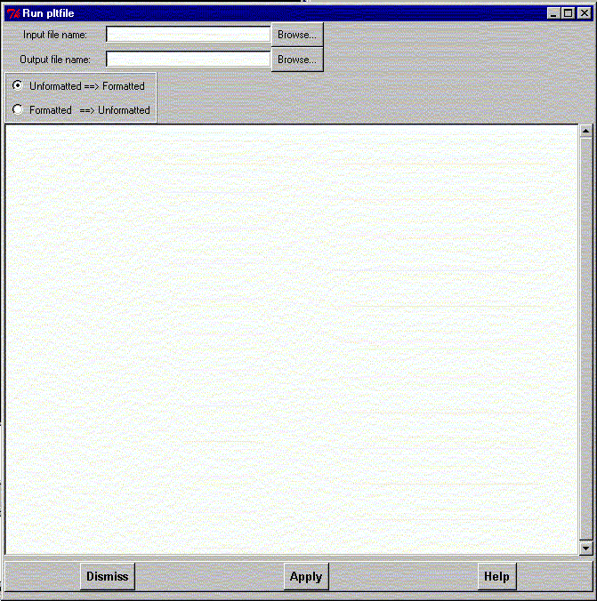

**************************************************************************
Run pltfile program widget
Leif Laaksonen CSC 1996
**************************************************************************
Run the plotfile to convert a plt file from binary to ASCII or ASCII to binary. The operation is mostly used to move a plt file between different hardware platforms.
Line command: see run command
**************************************************************************
LUL/1996
**************************************************************************